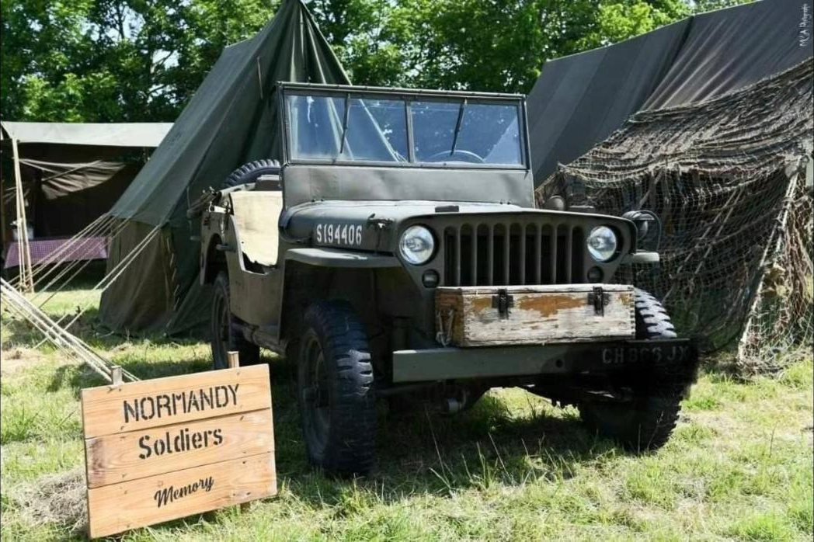
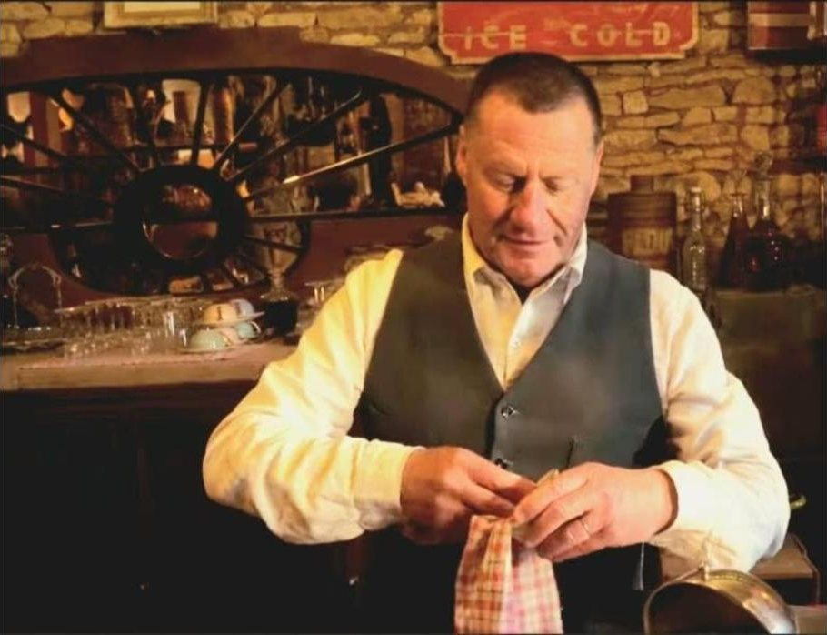
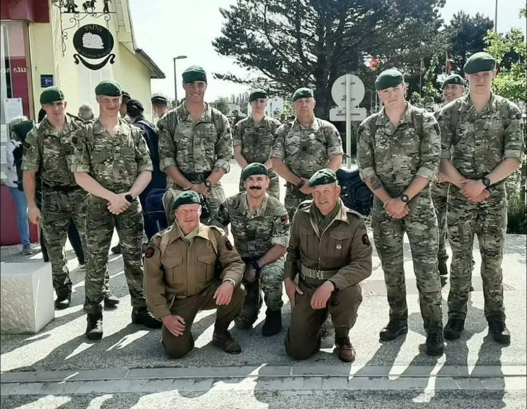

Camps de reconstitution
Nous installons des camps militaires tels qu'il en existait en Normandie en 1944 : tentes, matériel, véhicules d'époque. Nos membres en uniforme répondent aux questions des visiteurs. Ces camps sont ouverts gratuitement au public.
- Poste de commandement
- Hôpital de campagne
- Cantine et vie de camp
- Véhicules d’époque (jeeps, camions)

Reconstitutions civiles
La guerre ne s'est pas vécue qu'au front. Nous faisons revivre le quotidien des Normands sous l'Occupation et à la Libération : le café du village, les tenues, les objets du quotidien.
- Scènes de vie quotidienne
- Tenues et objets d’époque
- Hommage aux victimes civiles

Commémorations & hommages
Nous participons aux cérémonies du souvenir aux côtés des autorités, des anciens combattants et des délégations alliées : dépôts de gerbes, marches du souvenir, haies d'honneur.
- Cérémonies du Débarquement
- Hommages aux régiments alliés
- Rencontres avec les délégations

Animations sur mesure
Mairies, musées, écoles, comités des fêtes : nous intervenons pour animer une commémoration, une exposition ou une journée historique, seuls ou avec d'autres associations.
- Journées historiques
- Expositions et salons
- Interventions pédagogiques

Rejoignez le devoir de mémoire
Membre, donateur ou partenaire : chacun peut faire vivre la mémoire.